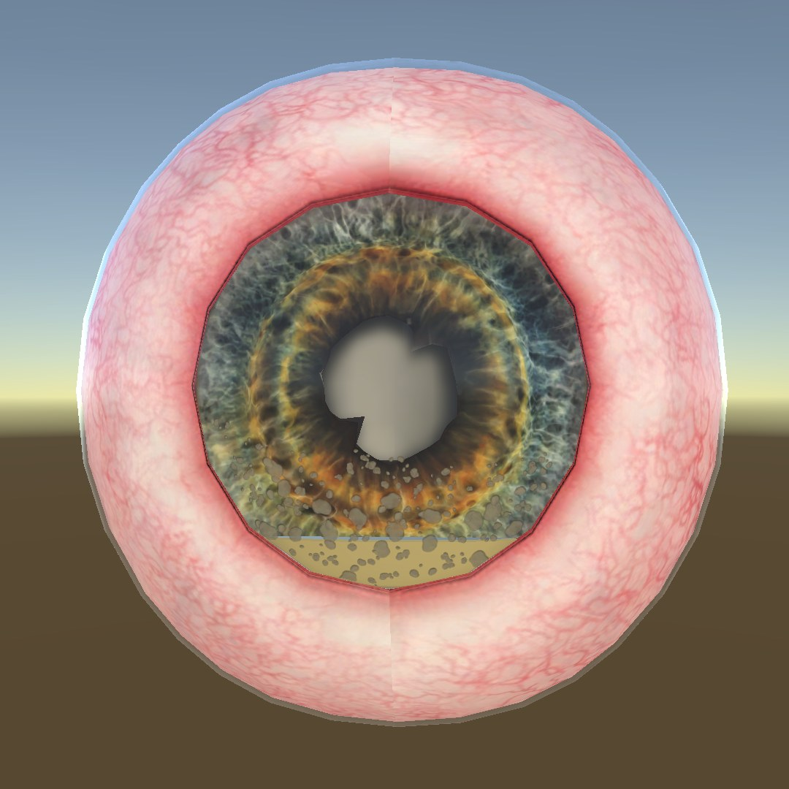
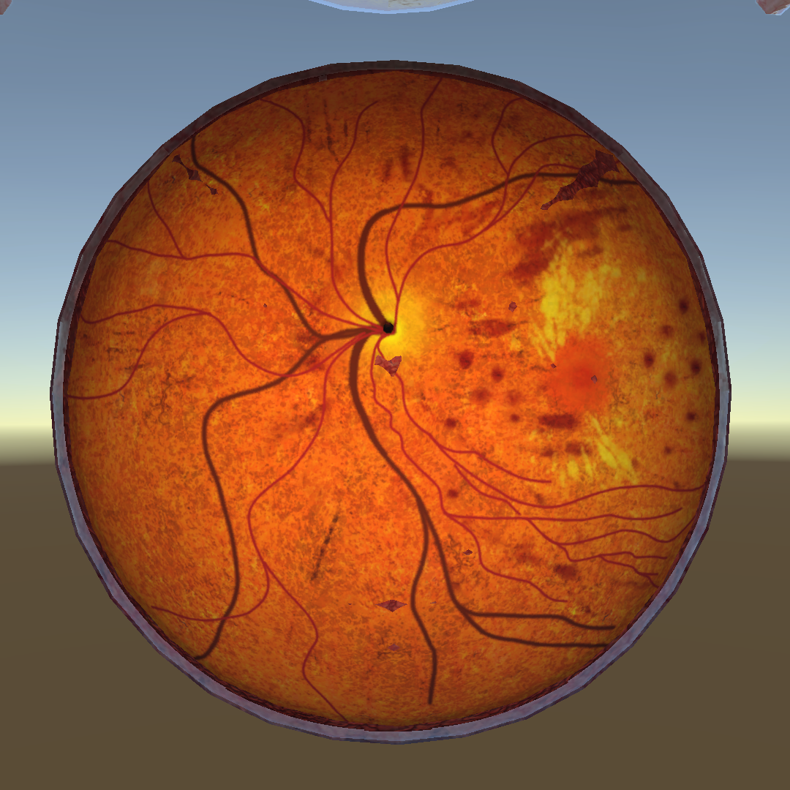
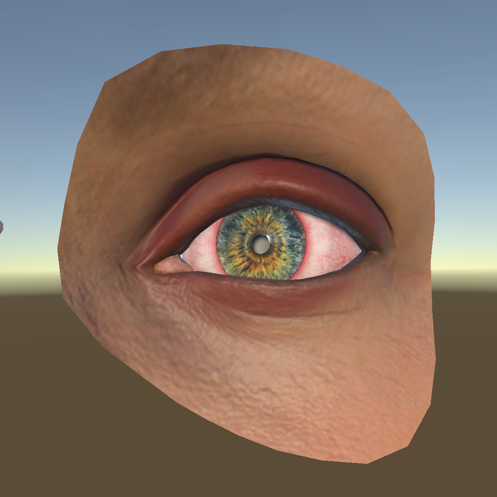

EYE IFX
Medical | Unity
December 2025 - May 2026



What is This Project
This project consists of eight interactive visual experiences (IFXs) designed to support teaching and learning around common eyeball pathologies. The goal was to create clear, intuitive 3D visualizations that help students understand what different eye conditions look like and how they present clinically, without overwhelming them with unnecessary interaction. Each experience focuses on a specific condition, including pink eye, corneal abrasion, corneal ulcer, herpes keratitis, uveitis, acute angle-closure glaucoma, diabetic retinopathy, and relative afferent pupillary defect (RAPD). The visuals emphasize clinically meaningful details, such as redness, lesions, staining patterns, and pupil response, allowing learners to observe changes from multiple angles simply by moving around the scene.
Some IFXs demonstrate progression or comparison. For example, corneal ulcers begin as small lesions and become more severe, while fluorescein staining is shown both with and without blue light to highlight how pathology becomes more visible under examination. The pupil exam experience visualizes normal and abnormal pupillary light reflexes by shining light into each eye and observing how both pupils respond.
Rather than requiring complex user actions, these experiences are intentionally minimal and observational. This keeps the focus on visual recognition and clinical understanding, making the IFXs useful as teaching aids, quick refreshers, or visual supplements in medical education settings.
What I Did
I served as the technical artist on this project and was fully responsible for creating all of the eye condition models. I worked closely with medical doctors to understand each pathology in detail, making sure the visual representations were accurate, clear, and clinically meaningful.
Throughout the process, I studied how each condition presents and progresses so the models could reflect realistic textures, colors, and visual cues. At the same time, I had to balance medical accuracy with the technical constraints of the platform. This meant finding efficient ways to optimize geometry, materials, and rendering so the models performed well while still maintaining high visual quality.
Overall, my role combined close collaboration with subject matter experts, hands-on 3D modeling, and technical problem-solving to deliver visuals that were both educationally effective and technically reliable.
Iterations — Diabetic Retinopathy
[One or two sentences on what changed between versions]
Gallery
Renders for each condition, from early versions to the latest. Select any image to enlarge it, then use the arrows to browse.
Uveitis
Herpes Keratitis
Corneal Abrasion
Corneal Ulcer
Pink Eye
Resources
Eye model: Eye Anatomy on CGTrader